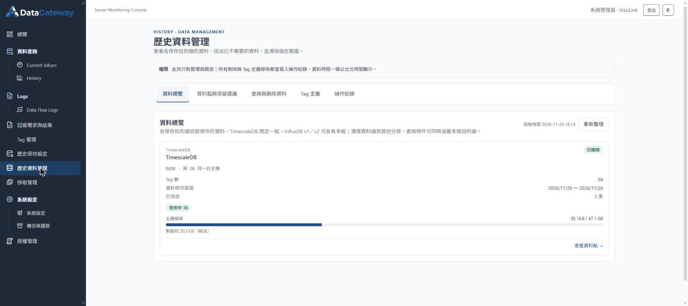
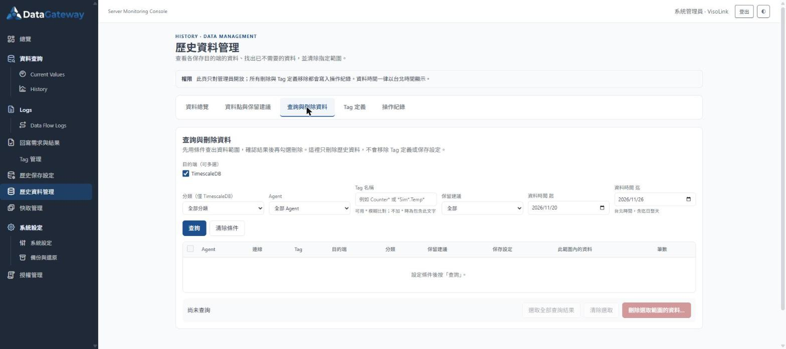

歷史資料管理
查看各保存目的端保存了哪些資料，找出不再需要的資料並清除指定範圍。此頁只對管理員開放，所有刪除都會寫入操作紀錄。
資料時間在此頁一律以台北時間顯示。刪除前系統會引導先到「備份與還原」備份。
查看資料總覽

- 開啟「歷史資料管理」，預設在「資料總覽」。
- 看每個目的端的 Tag 數、資料保存區間、已保存天數與主機磁碟。
- 按「查看資料點 →」進入 9.2。
知道每個資料庫存了多久、還剩多少空間。
失敗時先查
- 磁碟剩餘偏低：依 9.2 找出可移除的資料，或調整保存規則。
資料點與保留建議
- 選目的端、保留建議（可移除／建議檢視／使用中）、Agent，或輸入 Tag 名稱（可用 * 模糊比對）。
- 按「查詢」。
- 看每一列的保存設定、資料區間、最後資料時間、筆數與保留建議原因。
- 要清除時按「以目前條件到「查詢與刪除資料」」。
列出每個 Tag 在每個目的端的資料與保留建議。
展開「保留建議怎麼判斷」可看判斷依據。例如 Tag 定義已移除，或名稱對應不到現行 Tag 的資料，會建議可移除。
失敗時先查
- 沒有結果：放寬條件或清除條件後再查。
查詢與刪除歷史資料

- 勾選目的端（可多選），設定分類（僅 TimescaleDB）、Agent、Tag 名稱、保留建議。
- 設定資料時間起、迄（台北時間，含迄日整天），按「查詢」。
- 核對結果，勾選要刪除的列，或按「選取全部查詢結果」。
- 按「刪除選取範圍的資料…」，依確認視窗核對範圍後確認。
選取範圍的歷史資料被刪除，並記錄在「操作紀錄」。
刪除後無法復原。請先到「備份與還原」備份 TagData 或 InfluxDB 資料（第 12 章）。
失敗時先查
- 刪除鈕無法按：還沒有勾選任何查詢結果。
移除 Tag 定義與查看操作紀錄
- 在「Tag 定義」分頁選擇要移除的 Tag 定義。移除會連同該 Tag 在所有目的端的歷史資料一起刪除；Agent 仍在採集的 Tag 不能移除。
- 依確認視窗核對要刪除的目的端後確認。
- 切到「操作紀錄」查看所有刪除與 Tag 定義移除的紀錄。
操作紀錄列出誰在何時刪除了哪些資料。
移除 Tag 定義等同刪除該 Tag 的全部歷史，無法復原。
失敗時先查
- 顯示無法移除：該 Tag 仍有 Agent 在採集，先到「Tag 管理」移除來源。